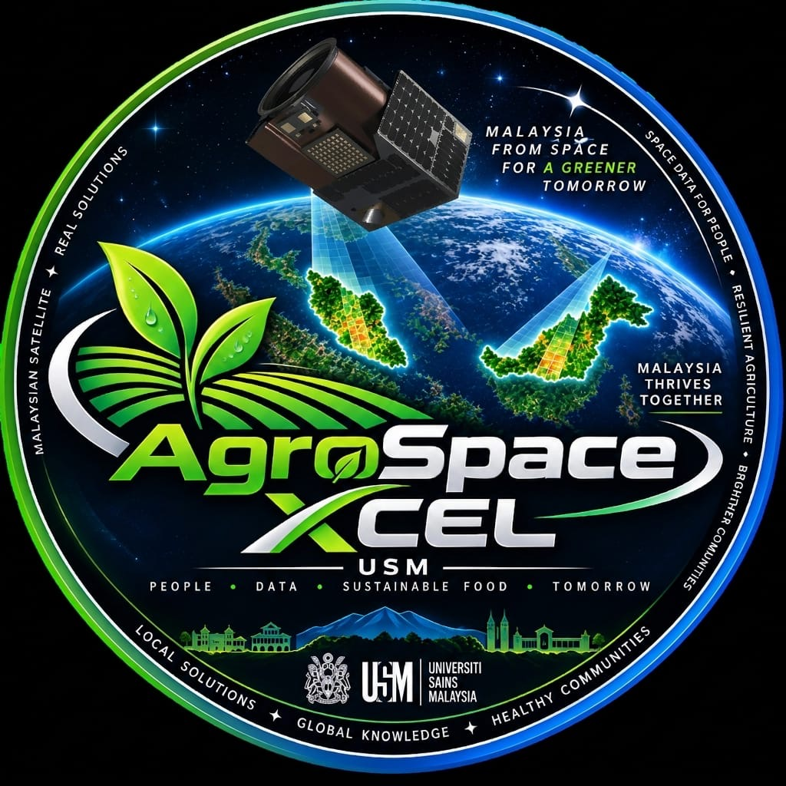

OBSERVE
Use the selected coordinates to retrieve environmental information and establish a field context.

AGROSPACE XCELNASA SPACE APPS CHALLENGE 2026NASA SPACE APPS CHALLENGE 2026 · FIELD SHIFT
We are AgroSpace Xcel — a team of 5 first-year Aerospace Engineering students from Universiti Sains Malaysia (USM), building FieldShift to turn Earth-observation signals into clearer agricultural decisions.
WHO WE ARE
We are first-year Aerospace Engineering students at Universiti Sains Malaysia, using our aerospace perspective to explore how satellite and environmental data can support farmers facing unpredictable weather.
FIELDSHIFT · LIVE LOCATION MODEL
Click anywhere on the map. The selected city/region and location-based indicators update automatically.
METHOD
Use the selected coordinates to retrieve environmental information and establish a field context.
Translate the signals into simple indicators instead of showing farmers raw data alone.
Highlight what deserves attention and provide a clear next step for monitoring.